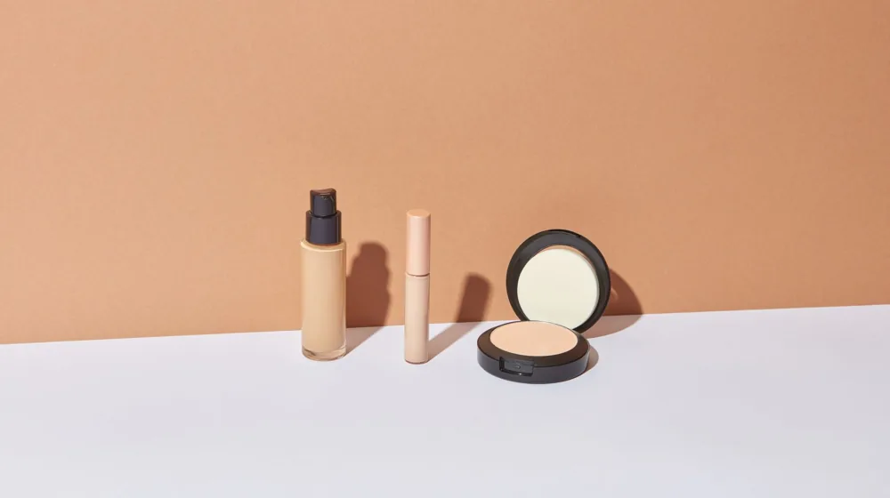

쿠션 파운데이션 vs 팩트 완벽 비교: 내 피부엔 뭐가 맞을까?
사진: Maria Camila Castaño / Pexels (무료 이미지, 출처 표기)
쿠션 파운데이션 vs 팩트, 핵심 차이점

바쁜 아침이나 외출 중 수정 화장을 할 때 손이 가장 많이 가는 제품은 단연 쿠션과 팩트입니다. 두 제품 모두 거울과 퍼프가 달린 휴대용 용기에 담겨 있어 겉보기에는 비슷하지만, 제형과 사용 목적은 완전히 다릅니다.
쿠션 파운데이션은 액상 파운데이션을 스펀지나 메쉬 망에 머금게 한 형태입니다. 수분감이 많아 촉촉하고 자연스러운 피부 표현에 유리합니다. 반면 팩트(Pact)는 가루 형태의 파우더를 단단하게 압축해 놓은 제형을 뜻합니다. 유분기를 잡고 피부 표면을 보송하게 마무리하는 데 특화되어 있습니다.
한눈에 보는 쿠션 vs 팩트 비교표
나의 화장 습관과 피부 고민에 맞는 제품이 무엇인지 아래 비교표를 통해 직관적으로 확인해 보세요.
내 피부에 맞는 제품 선택하는 법
잘못된 제품 선택은 메이크업이 들뜨거나 모공이 도드라져 보이는 원인이 됩니다. 자신의 피부 상태와 선호하는 연출법에 따라 선택 기준을 세우는 것이 좋습니다.
- 물광 및 윤광 피부를 원할 때: 촉촉한 제형의 쿠션 파운데이션을 선택하세요. 피부 속건조를 해결하면서 자연스러운 광을 낼 수 있습니다.
- 오후만 되면 화장이 지워지는 지성 피부: 피지 흡착 기능이 있는 파우더 팩트가 필수입니다. 메이크업 마지막 단계에서 가볍게 쓸어주면 지속력이 배로 늘어납니다.
- 모공과 요철이 고민일 때: 입자가 고운 프라이머 기능성 팩트를 사용하면 피부 표면을 매끄러운 달걀 표면처럼 보정할 수 있습니다.
밀착력을 높이는 올바른 도구 사용 및 주의사항
아무리 좋은 제품을 사도 바르는 방법이 잘못되면 화장이 쉽게 무너집니다. 쿠션을 바를 때는 밀어서 바르지 말고, 퍼프를 피부에 수직으로 톡톡 두드리며 밀착시켜야 들뜨지 않습니다. 양 조절이 가장 중요하므로 뚜껑 안쪽 벽면에 퍼프를 한 번 찍어 양을 덜어낸 뒤 얼굴 안쪽에서 바깥쪽으로 바릅니다.
팩트를 사용할 때는 내장된 퍼프도 좋지만, 가볍고 얇은 연출을 원한다면 브러시를 사용하는 것을 추천합니다. 브러시에 가루를 묻힌 뒤 가볍게 털어내고, 유분이 많이 올라오는 T존(이마, 코)과 눈가 위주로 굴리듯 쓸어줍니다.
위생 관리 주의사항: 퍼프를 오래 사용하면 피부 노폐물과 유분이 엉겨 붙어 트러블의 원인이 됩니다. 최소 주 1회는 전용 세정제나 중성세제를 이용해 미지근한 물에 세척하고 바짝 말려 사용해야 피부 건강을 지킬 수 있습니다.
화장품 전문가가 답하는 자주 묻는 질문
피부 화장을 할 때 많은 분이 헷갈려하는 두 가지 질문에 대한 명쾌한 해답입니다.
Q1. 쿠션을 바른 뒤에 팩트를 덧발라도 되나요?
네, 아주 좋은 방법입니다. 쿠션 파운데이션으로 피부 톤과 잡티를 커버한 뒤, 머리카락이 달라붙기 쉬운 얼굴 외곽 라인이나 유분이 쉽게 올라오는 T존에만 팩트를 살짝 얹어주면 메이크업 지속력이 극대화됩니다.
Q2. 건성 피부는 팩트를 절대 쓰면 안 되나요?
아닙니다. 건성 피부도 눈가나 눈썹 부위는 유분 때문에 메이크업이 잘 번집니다. 이때는 얼굴 전체가 아니라 아이 메이크업을 하는 눈가 부위에만 아주 소량의 팩트(또는 루스 파우더)를 발라 유분을 잡아주면 번짐 없는 깔끔한 화장을 유지할 수 있습니다.
🔗 이 글도 함께 보면 좋아요: 커튼 vs 블라인드 완벽 비교: 우리 집엔 뭐가 더 좋을까?
관련 추천 상품
이 포스팅은 쿠팡 파트너스 활동의 일환으로, 이에 따른 일정액의 수수료를 제공받습니다.
자주 묻는 질문(FAQ) (탭하면 펼쳐져요)
Q1. 쿠션을 바른 뒤에 팩트를 덧발라도 되나요?
A. 네, 아주 좋은 방법입니다. 쿠션 파운데이션으로 피부 톤을 커버한 뒤 유분이 쉽게 올라오는 T존에만 팩트를 살짝 얹어주면 메이크업 지속력이 극대화됩니다.
Q2. 건성 피부는 팩트를 절대 쓰면 안 되나요?
A. 아닙니다. 건성 피부라도 눈가나 눈썹 부위처럼 메이크업이 잘 번지는 국소 부위에만 아주 소량의 팩트를 사용해 유분을 잡아주면 번짐을 예방할 수 있습니다.
한눈에 보는 상품 목록
글로우 쿠션 파운데이션
수분 함량이 높아 건조한 피부에 자연스러운 광채와 보습감을 주는 쿠션입니다.
세미매트 쿠션 파운데이션
적당한 커버력과 보송한 마무리감으로 지 복합성 피부가 사계절 내내 쓰기 좋은 쿠션입니다.
기름종이 파우더 팩트
과도한 피지와 유분을 즉각적으로 잡아주어 메이크업 무너짐을 방지하는 압축 팩트입니다.
스킨 피니싱 모공 팩트
미세한 파우더 입자가 모공과 요철을 메워주어 도자기 같은 피부 결을 완성해주는 팩트입니다.